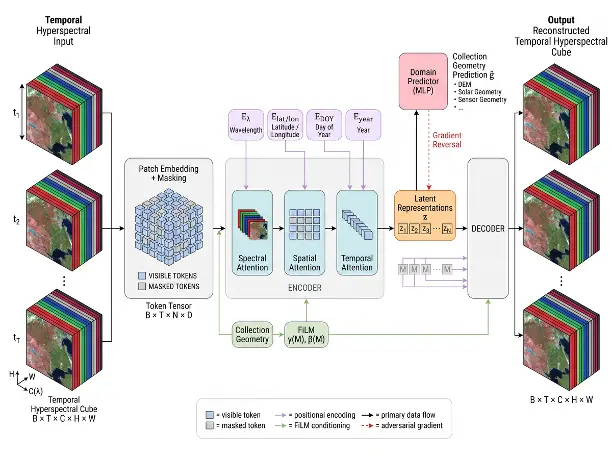

Self-supervised learning
Temporal Hyperspectral Representation Learning using Masked Auto Encoders
{kind=link}

Learning spectral, spatial, and temporal representations to study vegetation stress and environmental change.
Overview
This project uses masked autoencoders to learn generalizable spectral, spatial, and temporal representations from multi-temporal hyperspectral satellite imagery. The architecture factorizes attention across the spectral, spatial, and temporal dimensions and uses masked reconstruction to learn from large volumes of unlabeled imagery. Acquisition metadata—including terrain, illumination, viewing geometry, sensor characteristics, geographic location, and acquisition time—is explicitly incorporated to separate observational effects from intrinsic surface properties. The objective is to learn a latent representation that primarily captures the spectral state of materials, enabling their evolution to be tracked through time and ultimately supporting applications such as vegetation stress detection and environmental change characterization.
A closer look
{kind=link}
{kind=link}